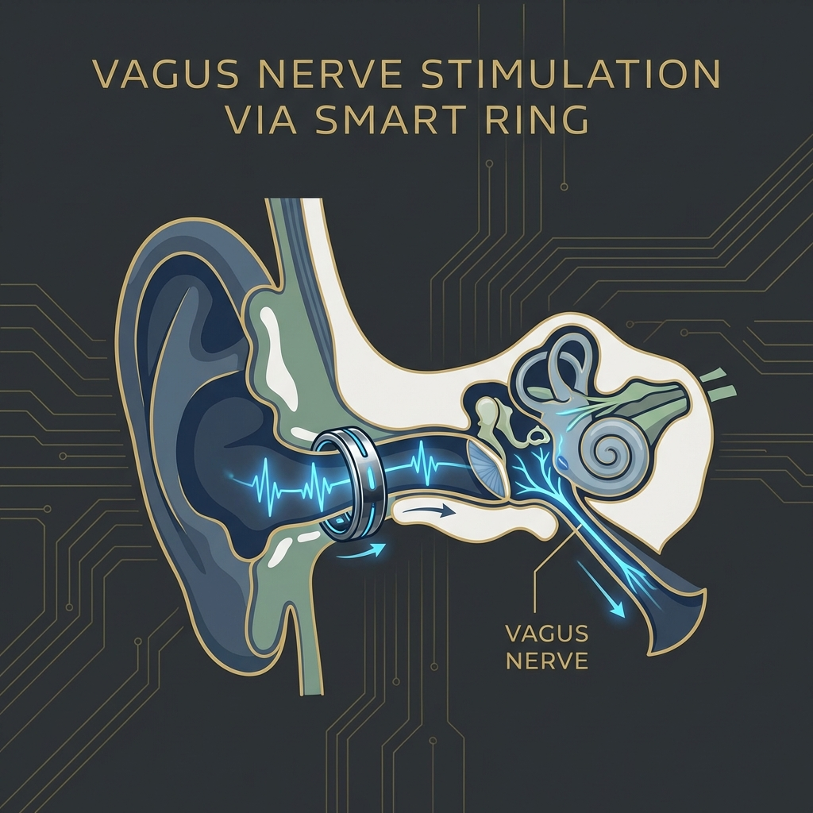

Bilder





Das erste Wellbeing-System, das nicht nur misst —
sondern versteht, was Ihre Daten wirklich bedeuten.

Millionen Menschen tragen Bio-Sensoren. Und wissen trotzdem nicht, was ihre Daten bedeuten. Das Problem ist nicht die Hardware — es ist die fehlende Intelligenz dahinter.
NANIL Pulse verbindet Ring-Biosensorik, Patch-Daten und Stimm-Analyse zu einem intelligenten Netzwerk. Die App ist das Gehirn — Hardware ist das Nervensystem.
Der globale Wellness-Technologie-Markt wächst schneller als KI, schneller als Cloud — getrieben von einer Generation, die Gesundheit nicht delegieren will.
Nicht schneller. Nicht mehr. Anders — auf einer fundamentaleren Ebene.
| Merkmal | Apple Watch / Oura | Garmin / Fitbit | ✦ NANIL Pulse |
|---|---|---|---|
| Sensorik | Einzelgerät | Einzelgerät | ✓ Ring + Patch + Stimme |
| Datenanalyse | Isolierte KPIs | Historische Trends | ✓ Kontextuelle Muster |
| Intervention | ✗ Keine | ✗ Keine | ✓ Closed-Loop, Echtzeit |
| Stimm-Analyse | ✗ Nein | ✗ Nein | ✓ Ja — KI-gestützt |
| Subscription-Modell | Ja — monatlich | Ja — monatlich | ✓ Nein — einmalig & fair |
| Positionierung | Medizin-nah / Sport | Fitness / Sport | ✓ Reines Wellbeing-System |
NANIL steht auf dem Fundament aktueller Forschung. Stimme als biomedizinisches Signal ist keine Theorie — es ist publizierte Wissenschaft.
Seien Sie von Anfang an dabei. Die nächste Kategorie entsteht jetzt.